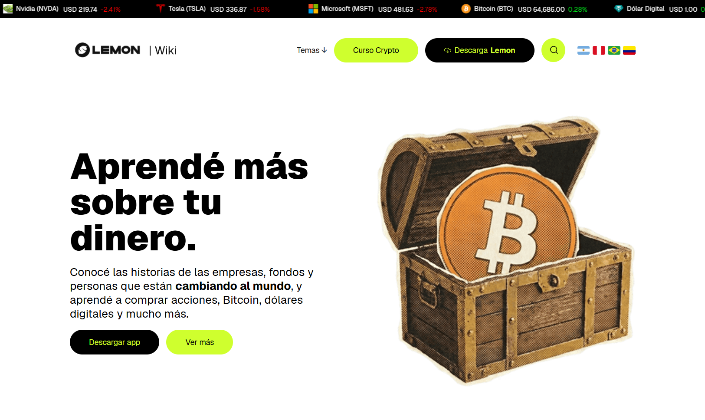
Lemon Wiki
Arquitectura y migración masiva de datos integrando WordPress con API Laravel.
VISITAR SITIO →Mi porfolio es un poco diferente al estándar.
Es un Juego, a medida que vayas superando los niveles, podrás ver más sobre mí.
PAUSADO
Score: 0
Nivel alcanzado: 1
FULLSTACK &
CREATIVE DEVELOPER
Diseño y desarrollo productos digitales de alto nivel. Integrando la precisión de arquitecturas backend sólidas con la expresividad de interfaces frontend interactivas.

Arquitectura y migración masiva de datos integrando WordPress con API Laravel.
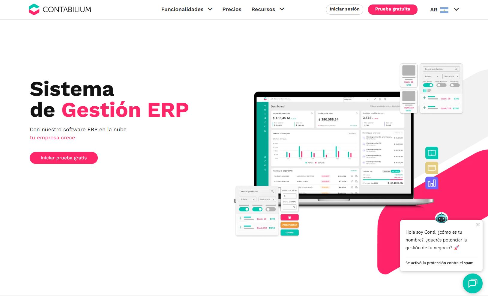
Arquitectura CMS personalizada reactiva y multilingüe para gestión contable.
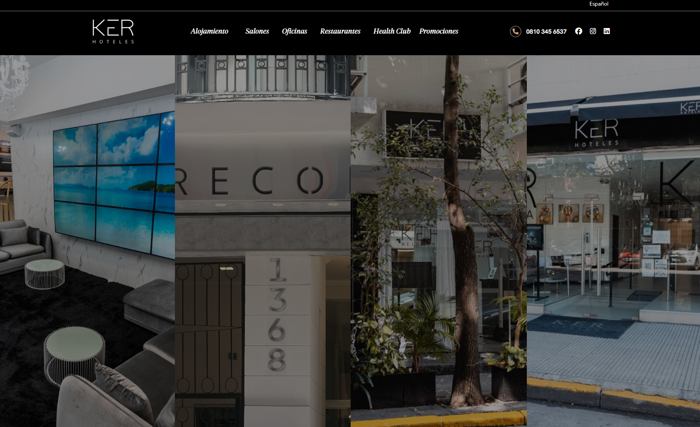
Plataforma web con motor de reservas mediante APIs externas.
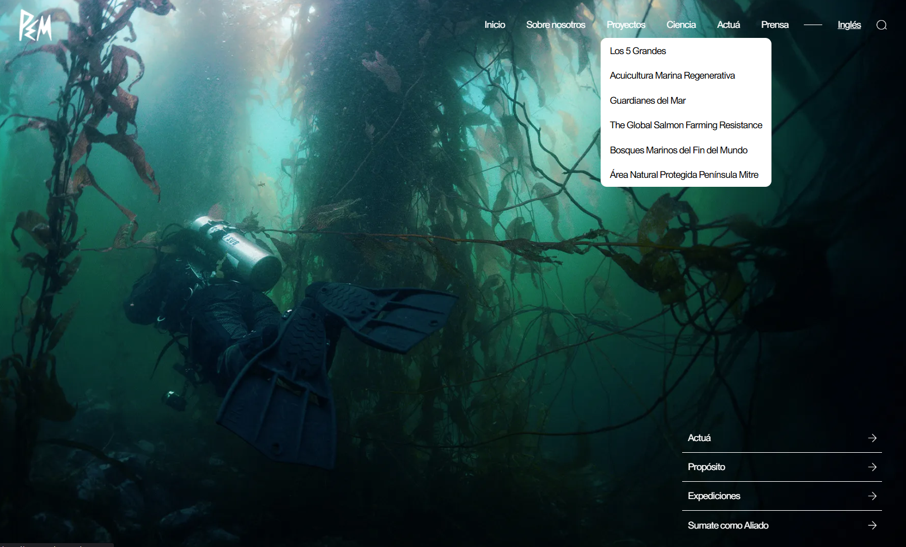
Desarrollo de interfaz y optimización de rendimiento backend.
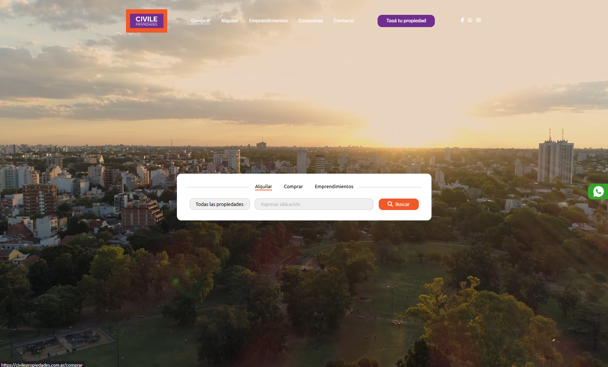
Plataforma inmobiliaria con motor de búsqueda y SEO técnico.
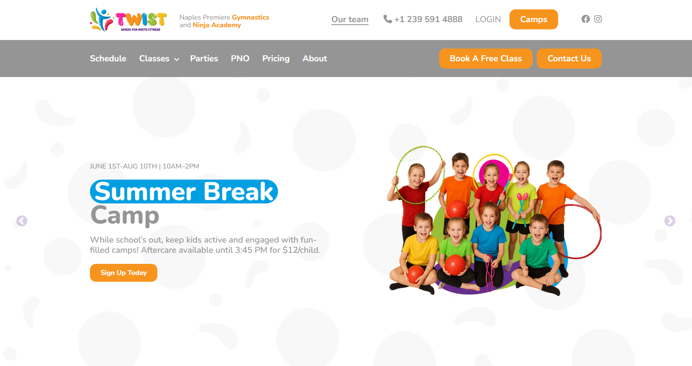
Plataforma web a medida con optimización SEO y MySQL.
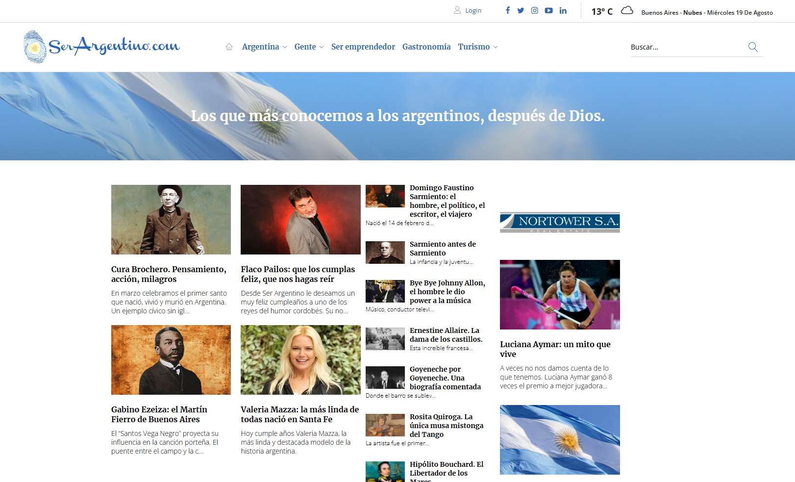
Mantenimiento evolutivo para portal de alto tráfico.
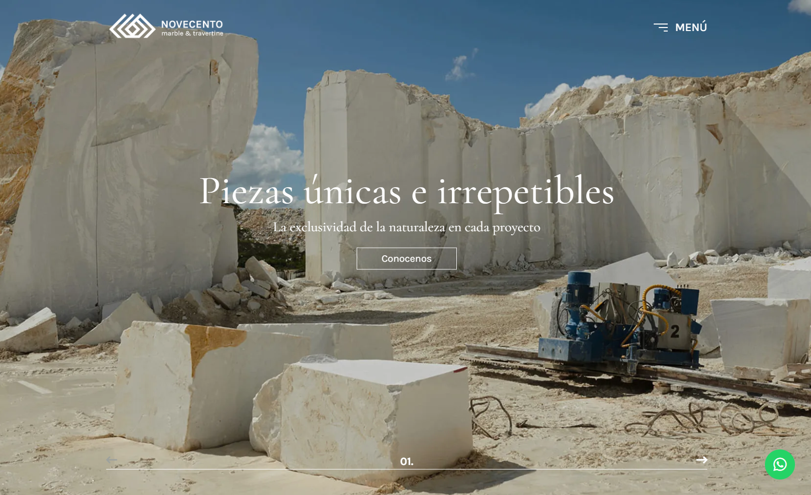
Interfaz interactiva y soporte en arquitectura backend.
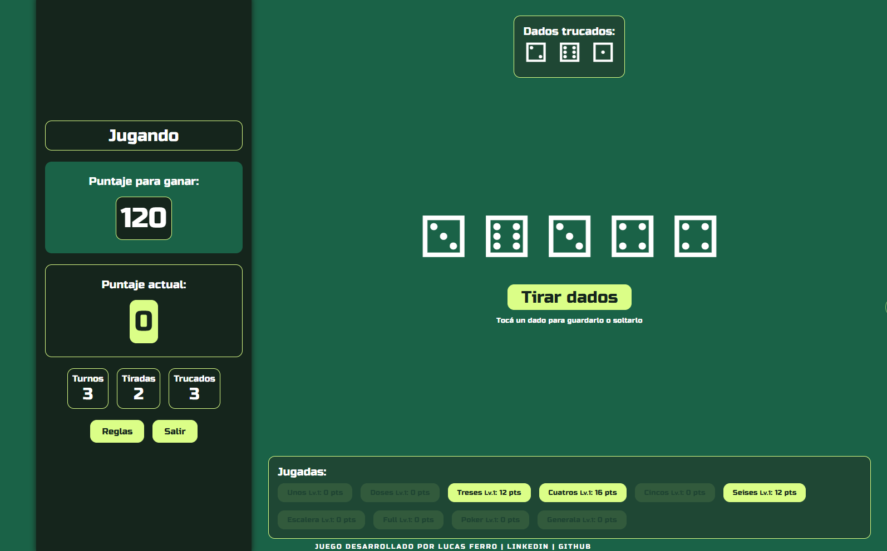
Juego de navegador reactivo en tiempo real con Livewire.
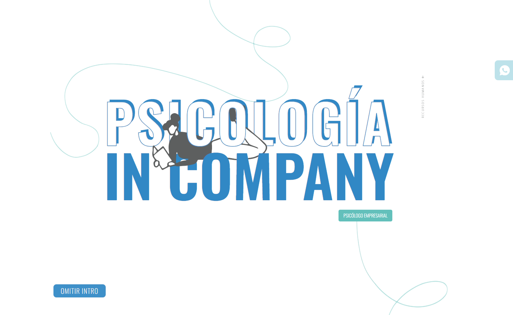
Sitio institucional WordPress con maquetación a medida.
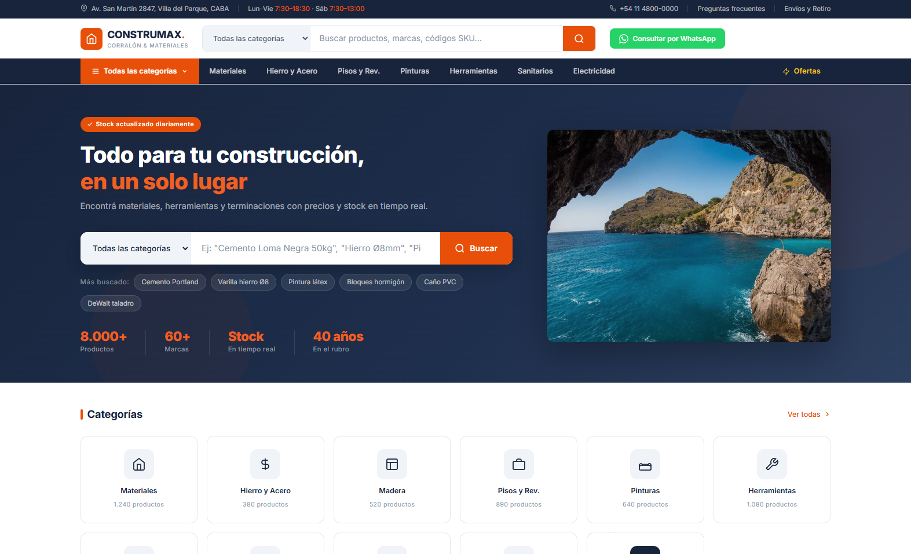
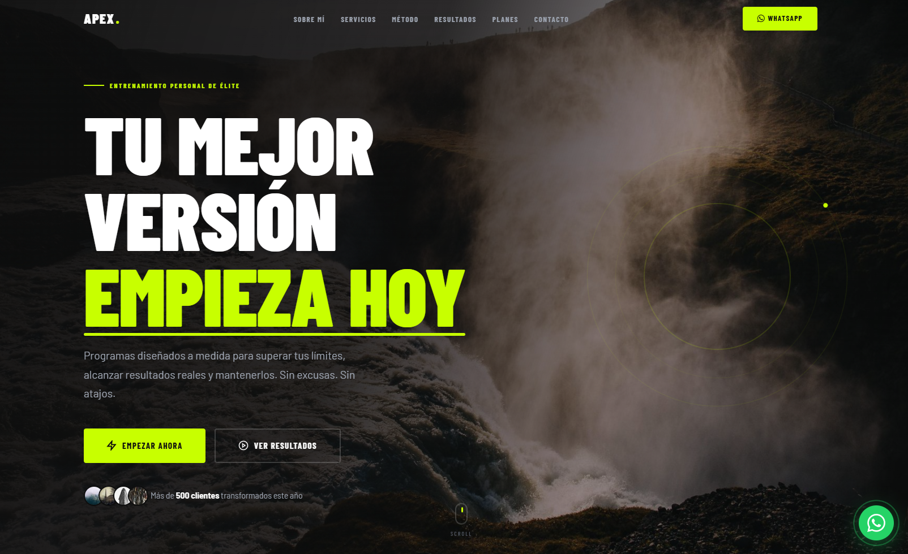
Interfaz para plataforma de entrenamiento adaptativa.
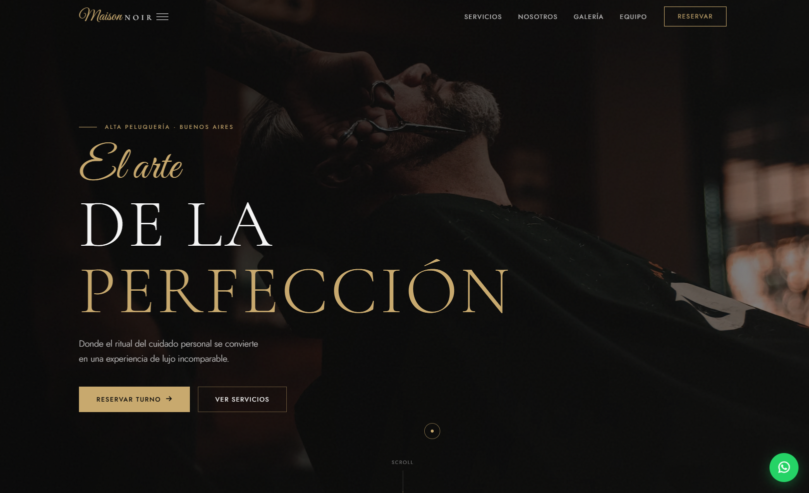
Maquetación editorial para marca de barberia alta gama.
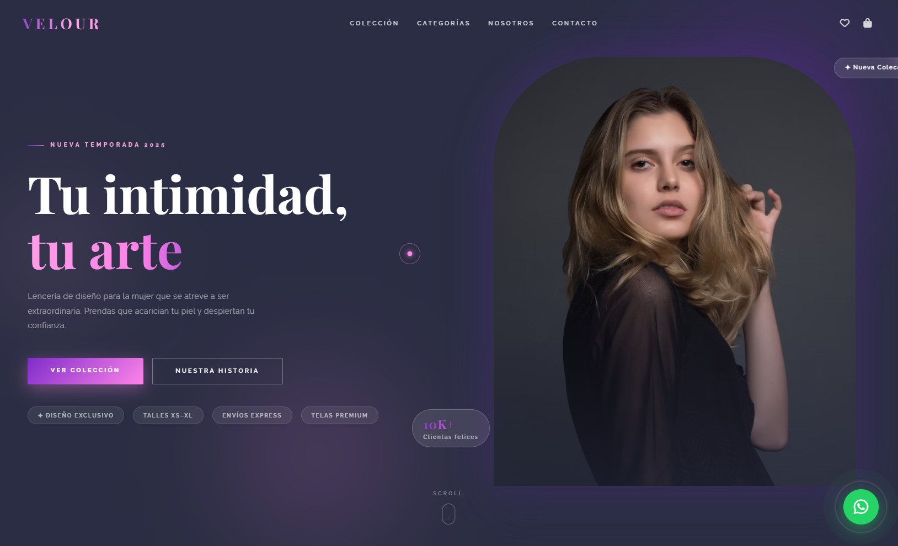
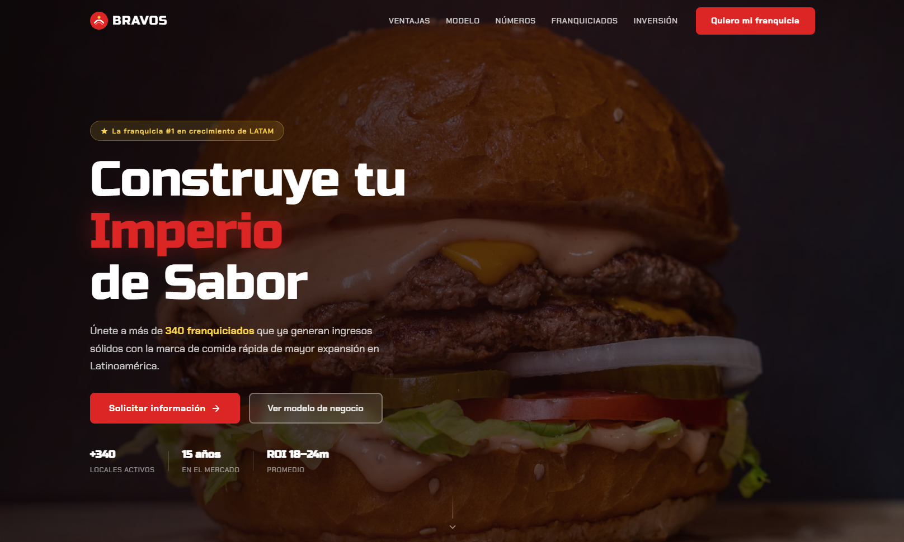
Tecnologías con las que trabajo en producción real — no en tutoriales.
Los proyectos son la evidencia.
Mi núcleo. +4 años diseñando sistemas escalables, CMS modulares, integraciones complejas con APIs de terceros y arquitecturas multi-lenguaje. Validado en proyectos reales con usuarios activos.
Maquetación editorial, interfaces reactivas e interactividad avanzada. Aplicado en todos los proyectos del portfolio — incluyendo este sitio.
Diseño relacional, optimización de consultas complejas y normalización masiva de datos. Reducción medible de tiempos de respuesta en sistemas críticos.
Control de versiones, integración con servicios externos y metodologías ágiles en equipos de trabajo reales.
CREDENCIALES EMITIDAS
EN CURSO
→ PHP, Laravel, MySQL y las demás tecnologías del stack principal no tienen certificado formal — se aprendieron y perfeccionaron directamente en entornos de producción.
Los proyectos son la validación.
Lideré una empresa de construcción y reparaciones junto a dos socios. Cuando el COVID cerró los edificios, la empresa no sobrevivió, y decidí no reconstruir lo mismo.
ANTESEscribí mi primer "Hello World" en 2021. Para principios de 2023 ya estaba trabajando como desarrollador. Y mi objetivo actual es volverme ingeniero para 2030.
AHORADesde chico amé los videojuegos — Legend of Mana, Stardew Valley, Skyrim son algunos favoritos. Hoy estoy del otro lado, aprendiendo a crear juegos propios en Godot.
El arte y la música me los inculcaron desde chico. Hoy como programador intento crear experiencias que no solo sean eficientes, sino agradables y visualmente atractivas.
No hay mucho que decir acá. Me gusta cocinar y me gusta comer :D